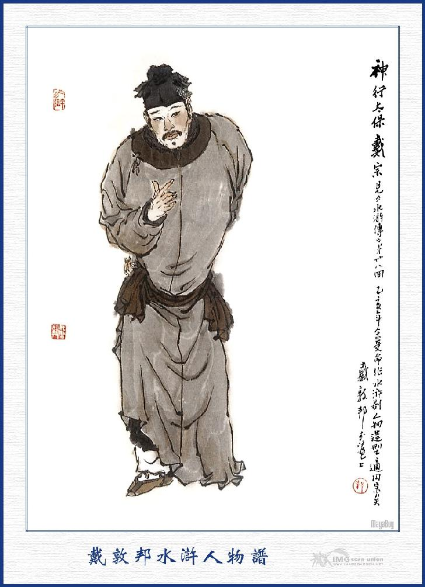
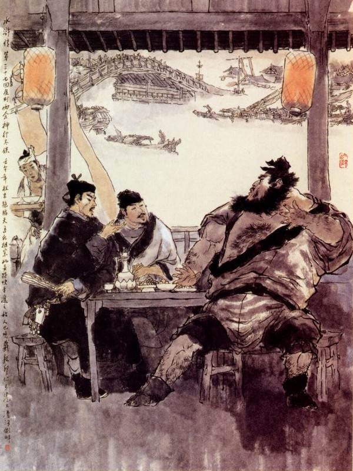
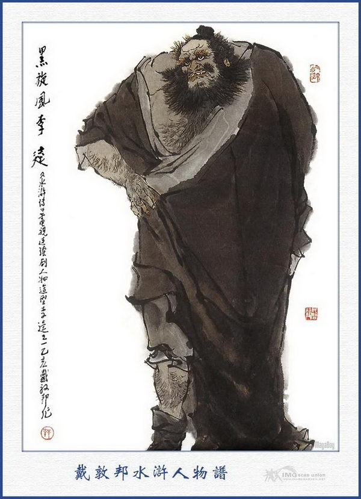
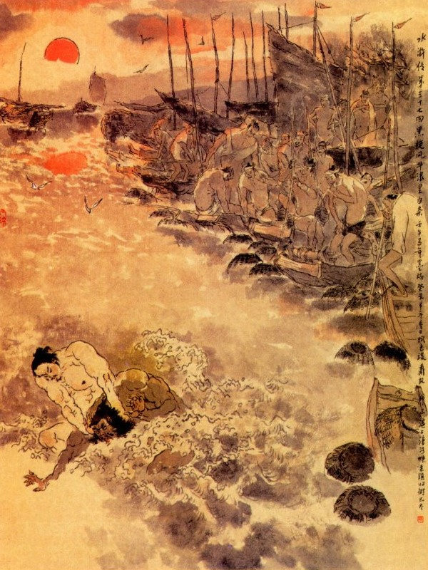
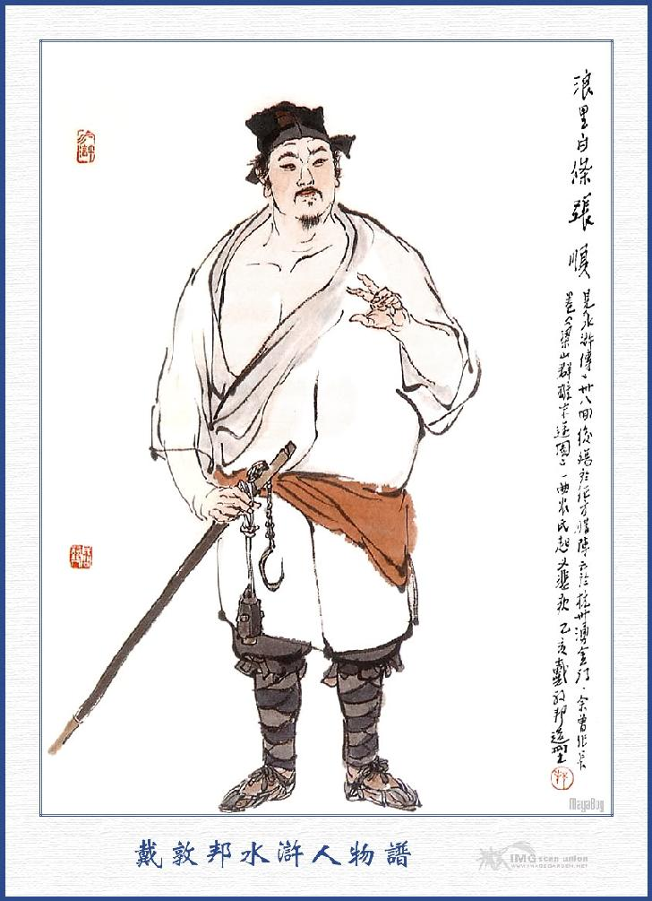

Bấy giờ Tiết Cấp đương ngồi vắt vẻo trên sảnh, thấy Tống Giang đi đến, liền quát hỏi rằng:
- Đứa nào là thằng tù mới vào ở đây?
Tụi bài đầu trỏ vào Tống Giang mà đáp rằng:
- Bẩm chính là người này đây.
Tiết Cấp lại quát luôn rằng:
- Thằng lùn đen kia, mày cậy thế ai mà đến đây không đưa nộp tiên lệ cho ta?
Tống Giang điềm nhiên mà đáp rằng:
- Phàm sự nhân tình là đó người ta tình nguyện, có lẽ nào lại bức bách người ta được. Gớm nhà bác giỏi thực.
Những người đứng xem hai bên, nhìn thấy vậy thì toát mồ hôi mà sợ thay cho Tống Giang. Tiết Cấp lại quát lên rằng:
- À! Thằng giặc tù này vô lễ thực, dám gọi ta là nhà bác này. Chúng bay đâu lôi cổ đánh đủ trăm roi cho ta xem. Chúng nghe nói, đều có lòng thương nể Tống Giang, liền lẳng lặng mà trốn đi, bỏ một mình Tiết Cấp và Tống Giang ở đó, Tiết Cấp liền lấy làm giận, liền vác roi đến toan đánh Tống Giang.
Tống Giang ung dung hỏi rằng:
- Tiết Cấp ơi! Ông định đánh tôi, vậy tôi có tội gì?
Tiết Cấp thét to lên rằng:
- Thằng giặc tù này, mày tức là hàng hóa ở trong tay tao, ho một tiếng cũng là tội rồi.
Tống Giang nói:
- Phải ông muốn nói thế nào thì nói, nhưng tôi tội cũng không đến nỗi chết nào?
- Tội mày không đến nỗi chết, nhưng ta định đánh chết mày thì cũng như đánh chết con ruồi vậy.
Tống Giang nghe nói, cười nhạt mà rằng:
- Tôi đây chỉ vì không đưa tiền đút lót mà đến nỗi đánh chết, vậy thì những kẻ giao thông với Ngô Học Cứu ở Lương Sơn Bạc sẽ xử ra sao?
Tiết Cấp nghe nói đến câu ấy thì vội vất roi xuống đất mà hỏi luôn rằng:
- Nhà ngươi nói gì thế?
- Tôi nói cái người giao thông với Quân Sư Ngô Học Cứu, việc gì mà hỏi tôi?
Tiết Cấp cuống người lên, nắm lấy Tống Giang mà hỏi luôn rằng:
- Bác là ai? Sao lại nói câu ấy?
Tống Giang nói rằng:
- Thưa ngài, tôi là Tống Giang ở Vận Thành đây.
Người kia cả kinh, vội vàng lạy rạp xuống mà rằng:
- Té ra Huynh trưởng chính là Cập Thời Vũ Tống Công Minh, tôi không được biết.
Nói đoạn liền bảo Tống Giang rằng:
- Ở đây không tiện nói chuyện, xin mời Huynh trưởng vào trong thành, ta sẽ đàm đạo với nhau.
Tống Giang đáp rằng:
- Vâng, xin Tiết Cấp hãy đợi cho một lát, để Tống Giang về xếp dẹp bên phòng rồi sẽ đi theo.
Nói đoạn, vội vàng về phòng lấy bức thư của Ngô Dụng thu vào trong bọc rồi lấy một ít tiền rồi đóng cửa giao cho bài đầu coi giữ mà quay ra theo Tiết Cấp vào trong thành Giang Châu. Khi vào trong thành, tìm vào ngồi ở một tửu lâu rất kín rồi Tiết Cấp hỏi Tống Giang rằng:
- Huynh trưởng gặp Ngô Học Cứu ở đâu?
Tống Giang lấy bức thư trong bọc đưa ra cho Tiết Cấp. Tiết Cấp bóc xem hết lượt rồi cất thư vào túi mà cúi xuống lạy Tống Giang. Tống Giang vội đáp lễ lại mà rằng:
- Vừa rồi chúng tôi nói năng có điều không phải, xin ngài tha lỗi cho.
Tiết Cấp nói:
- Mấy hôm trước tiểu đệ chỉ nghe nói, có một người họ Tống đến đây, mọi khi thì vẫn thường lệ mỗi người tù đi đến, phải nộp tiền năm lạng mà ngày nay đến ngót nửa tháng trời, vẫn chưa thấy nộp nên đệ muốn đến hỏi xem sao? Ai ngờ lại chính là nhân huynh ở đó. Dám xin nhân huynh tha tội ấy cho.
- Sai Bát cũng thường nói đến đại danh luôn luôn, Tống Giang này vẫn định đến chào, song không biết túc hạ trọ ở đâu và cũng không có việc gì dám đi vào trong thành, nên đành phải đợi khi túc hạ ra đây rồi sẽ bái kiến. Không phải là năm lạng bạc không thể đưa đi được, song cũng chắc rằng, thể nào nhân huynh cũng có phen qua đến ở đây, cho nên mới chậm trễ như vậy. Nay được gặp ngài ở đây, thực là thoả lòng vô hạn.
Tiết Cấp này tức là Viện Trưởng Đới Tung làm Tiết Cấp coi ngục ở hai viện Giang Châu mà Ngô Dụng đã nói với Tống Giang khi ở Lương Sơn vậy. Nguyên thuộc về đời nhà Tống, các người làm Tiết Cấp ở mạn Kim Lăng đều gọi là Gia Trưởng, còn mạn Hồ Nam đều gọi là Viện Trưởng. Vì thế người ta gọi Đới Tung là Viện Trưởng Giang Châu. Đới Tung có thuật rất kỳ lạ, mỗi khi có văn thư cần cấp thì buộc hai cái giáp mã vào trái chân làm phép thân hành thì có thể đi một ngày được năm trăm dặm, nếu buộc bốn cái vào hai chân thì có thể đi một ngày tới tám trăm dặm, nhân thế người ta gọi là Thần hành Thái Bảo Đới Tung.

ĐỚI TUNG
Bấy giờ Đới Tung cùng Tống Giang chuyện trò với nhau, hai người đều lấy làm thoả tình thích ý rồi gọi các thứ rượu nhắm lên cùng uống rượu làm vui.
Trong khi uống rượu Tống Giang kể hết mọi chuyện đi đường cho Đới Tung nghe, Đới Tung cũng kể chuyện nhân tình, cùng Ngô Học Cứu cho Tống Giang nghe, rất là mật thiết. Khi uống được vài tuần rượu, chợt nghe dưới gác có tiếng người huyên náo ầm ầm rồi thấy tên tửu bảo lật đật lên nói với Đới Tung rằng:
- Người này chỉ có Viện Trưởng ngăn bảo thì mới được, vậy xin nhờ Viện Trưởng xuống bảo giúp cho.
Đới Tung hỏi:
- Ai ở dưới ấy?
- Bẩm ngài chính là Thiết Ngưu (con trâu sắt) Lý Đại Ca vẫn theo Viện Trưởng mọi khi, hiện đương tìm chủ hàng để vay tiền ở dưới ấy.
Đới Tung cười rằng:
- Lại thằng cha ấy lăng nhăng ở đây rồi, ta tưởng là ai? Xin Huynh trưởng ngồi đây, để tôi xuống bảo anh này mấy câu rồi sẽ đi lên ngay.
Nói xong đứng dậy đi xuống gác một lúc rồi dẫn một anh chàng to lớn đen chũi cùng đi lên gác. Tống Giang thấy vậy lấy làm kinh ngạc, hỏi Đới Tung rằng:
- Dám thưa Viện Trưởng Đại Ca này là ai?
Đới Tung đáp:
- Người này là một người coi ngục ở trong lao tiểu đệ; họ Lý tên Quỳ, người huyện Nghị Thủy đất Nghi Châu, thuộc Bách Thượng. Anh ta có một tên lạ là Hắc Toàn Phong (Gió lốc đen) Lý Quỳ và người làng anh ta thường gọi là Thiết Ngưu Lý Quỳ, sau có tội đánh chết người, phải trốn đi nơi khác; Nay dẫu được ân xá, song vẫn lưu lạc giang hồ mà vẫn chưa về được cố hương. Anh ta tính hay chè rượu, thường dùng hai cái búa để đánh nhau, các ngón côn quyền cũng giỏi, hiện đương theo việc ở đây. Bấy giờ Lý Quỳ trông thấy Tống Giang bèn hỏi Đới Tung rằng:
- Ca Ca ơi! Anh chàng đen sì đó là ai?

Đới Tung nghe hỏi thì cười bảo Tống Giang rằng:
- Áp Ty coi đấy, hắn lỗ mãng đến thế thì thôi, không còn biết một tý gì gọi là lễ phép.
Lý Quỳ lại hỏi Đới Tung rằng:
- Tôi hãy hỏi Ca Ca thế nào là lỗ mãng?
- Chính phép ra có hỏi đến ai, phải nói rằng: Vị quan nhân này là ai? Thì mới phải, nay ngươi đường đột hỏi ngay rằng: "Anh chàng đen sì đó là ai?” Như thế có phải là lỗ mãng không? Ta bảo cho mà biết: Vị nhân huynh chính là người nghĩa sĩ mà mọi khi ngươi vẫn ước ao định đến bái kiến đó.
- Có phải là Sơn Đông Cập Thời Vũ Hắc Tống Giang không?
Đới Tung quát lên rằng:
- Đồ quái này, không biết gì cả, sao dám gọi sỗ sàng thế? Không cúi xuống mà lạy đi, còn đợi đến bao giờ?
Lý Quỳ nói:
- Có quả là Tống Công Minh thì tôi sẽ lạy, còn người khác thị làm gì? Tiết Cấp đừng đánh lừa tôi, cho tôi lạy xằng lạy bậy rồi lại cười tôi.
Tống Giang liền đáp lên rằng:
- Tôi chính là Sơn Đông Hắc Tống Giang đây.
Lý Quỳ nghe nói vỗ tay kêu rằng:
- Trời ơi! Bố tôi sao không nói trước cho Thiết Ngưu mừng?
Nói đoạn liền phủ phục xuống để lạy Tống Giang. Tống Giang vội vàng đáp lễ mà nói rằng:
- Xin mời tráng sĩ ngồi đây một thể.
Đới Tung cũng bảo Lý Quỳ rằng:
- Anh đến ngồi bên cạnh tôi đây mà hầu rằng:
Lý Quỳ ngồi xuống bên cạnh Đới Tung rồi nói rằng:
- Uống rượu bằng chén nhỏ phiền lắm, không chịu được, xin lấy chén lớn ra đây.
Tống Giang hỏi Lý Quỳ rằng:
- Vừa rồi làm sao mà Đại Ca giận dữ ở dưới nhà như thế?
Lý Quỳ đáp rằng:
- Tôi có một đỉnh bạc lớn đem đổi lấy mười đỉnh bạc con, tiền hết mất cả rồi, nay định đến mượn chủ hàng mười lạng bạc con để chuộc bạc lớn về cho hắn và chỉ dùng một ít, ai ngờ anh ta lại nhất định không cho mượn! Tôi tức mình đương định đánh cho một mẻ tan nát cửa nhà mới thôi. Cũng may lại bị Ca Ca tôi gọi lên đây, chứ không thì.
- Đại Ca chỉ cần mười lạng bạc, hay là phải tiền lãi nữa?
- Tiền lãi tôi đã có rồi, bây giờ chỉ cần mười lạng bạc để đi chuộc ngay thôi.
Tống Giang nghe nói, liền móc túi lấy ra mười lạng bạc đưa cho Lý Quỳ mà nói rằng:
- Đại ca cầm tiền mà đi chuộc về.
Đới Tung thấy vậy, toan ngăn lại thì Tống Giang đã trao tay cho Lý Quỳ mất rồi. Lý Quỳ tiếp được món tiền, liền đứng dậy nói rằng:
- Tốt lắm, hai vị Ca Ca hãy đợi tôi một lát, tôi chuộc bạc đem về trả ngay rồi xin theo Tống Ca Ca ra ngoài thành đánh chén.
Tống Giang nói:
- Hãy ngồi một lát rồi sẽ đi.
Lý Quỳ nói:
- Tôi chỉ đi một lúc rồi lại đến đây ngay.
Nói xong đẩy rèm đi thẳng xuống lầu. Bấy giờ Đới Tung bảo với Tống Giang rằng:
- Huynh trưởng đưa tiền cho hắn làm gì? Vừa rồi tôi toan giữ thì Huynh trưởng đã đưa ra mất rồi.
Tống Giang nói:
- Tại sao lại thế?
- Hắn ta dẫu là người trung trực nhưng tính ham uống rượu, thích đánh bạc, còn có bao giờ có được một đỉnh bạc mà đổi ra, cái đó hắn nói dối đấy. Bây giờ đi vội đi vàng thế, tức là đi đánh bạc. Nếu được ra tất đem tiền đến trả, Huynh trưởng mà nhược bằng bị thua mất thì còn đào đâu ra mười lạng bạc mà trả lại, thế có phải thêm bất tiện cho Đới Tung này lắm không?
Tống Giang cười rằng:
- Huynh trưởng hà tất nghĩ như thế, mấy lạng bạc ấy có làm gì, để mặc cho anh ta đánh bạc, thua hết thì thôi. Tôi xem người ấy là một người trung trực lắm.
- Hắn ta võ nghệ cũng khá, chỉ có một điều là tính thô mật lớn, không cần gì ai, ở đất Giang Châu này, mỗi đám tù tội thì lại đánh đập tất cả đám coi ngục làm cho tôi nhiều phen cũng liên lụy đến hắn. Giữa đường thấy sự bất bình là thế nào cũng đánh cho những bọn cường ngạnh, vì thế khắp trong thành Giang Châu ai ai cũng sợ.
Nói đoạn Tống Giang bảo với Đới Tung rằng:
- Chúng ta uống mấy chén rượu nữa rồi đi chơi ngoài thành một lúc cho vui.
Đới Tung nói:
- Tiểu đệ quên đi mất, để rồi xin dẫn nhân huynh đi xem Giang Cảnh mới được.
- Tôi đến đây cũng muốn đi xem phong cảnh bên sông một lượt, nhưng chưa có dịp nào được đi, vậy xin uống rồi ta đi một thể. Nói đoạn hai người cùng ngồi nói chuyện với nhau.
Khi đó Lý Quỳ vớ được món tiền của Tống Giang ra đi, nghỉ khẩm lẩm trong bụng rằng:
- Tống Giang Ca Ca thực là quý hóa, xưa nay chưa từng chơi thân với mình mà bỗng dưng cho mượn ngay mười lạng bạc, thế mới biết trọng nghĩa khinh tài, tiếng đồn đáng lắm. Chỉ hiềm vì mình mấy hôm nay đánh bạc thua mãi, không có một đồng nào để làm hảo hán mà mời ông ta đi đánh chén được! Bây giờ ta có mười lạng bạc này, nếu đánh được bạc thì sẽ để mấy quan tiền mời ông ta đi chén vậy.
Chàng nghĩ vậy, liền vội vội vàng vàng đi ra ngoài thành vào nhà Tiểu Trương Ất để đánh bạc. Khi vào đến sòng bạc, chàng ta vất mười lạng bạc xuống đất mà gọi lên rằng:
- Chờ tôi với.
Tiểu Trương Ất can:
- Đại Ca hãy khoan, để tiếng sau sẽ đánh.
Lý Quỳ nói:
- Không, tôi cần đánh tiếng bạc này mới được.
- Đại Ca hãy đứng ngoài mà nghe nước bạc xem sao?
- Tôi không cần nghe ngóng gì cả, đánh là đánh luôn, này năm lạng bạc một tiếng này đây.
Nói xong cướp giựt lấy tiền mọi ở tay người khác rồi hỏi lên rằng:
- Tôi cóp với ai đây?
Tiểu Trương Ất nói rằng?
- Đại Ca đánh năm lạng thì cóp với tôi.
Lý Quỳ vỗ tay reo:
- Được lắm. được lắm.
Vừa reo dứt lời thì nhà cái mở bạc. Lý Quỳ bị thua, Tiểu Trương Ất liền vớ lấy bạc của Lý Quỳ. Lý Quỳ vội kêu rằng:
- Chỗ ấy của tôi mười lạng bạc đấy.
Tiểu Trương Ất đáp rằng:
- Nếu vậy còn năm lạng đánh tiếng nữa, được thì tôi trả lại cả.
Lý Quỳ lại kéo lấy tiền mọi rồi reo lên rằng:
- Được. Vừa reo xong thì lại thua tiếng nữa.
Tiểu Trương Ất cười rằng:
- Tôi đã bảo rằng: Cướp tiền mọi làm gì, hãy nghỉ thì không. Không nghe tôi, thành ra thua luôn hai tiếng rồi.
Lý Quỳ bảo với Tiểu Trương Ất rằng:
- Tiền ấy của người khác đấy.
Tiểu Trương Ất nói rằng:
- Của ai thì mặc, đã đánh thua rồi, còn nói gì nữa?
- Thôi anh hãy cho tôi mượn rồi sáng mai trả vậy.
- Nói bông làm gì thế? Trong đám bạc đến cha con cũng mặc kệ, nữa là. Bác đánh thua rồi, còn.
Lý Quỳ nghe đến đó, xắn áo lên rồi quát hỏi rằng:
- Có trả hay là không?
Tiểu Trương Ất thấy vậy bảo Lý Quỳ rằng:
- Lý Đại Ca mọi khi đánh bạc sòng phẳng lắm, sao hôm nay lại giở giọng như thế? Lý Quỳ lặng ngắt xông vào vồ lấy đỉnh bạc của mình rồi lại cướp thêm mươi lạng bạc nữa của kẻ khác mà đùm vào vạt áo, trợn mắt bảo chúng rằng:
- Lão gia mọi khi rất sòng phẳng, nhưng hôm nay hãy tạm không sòng phẳng một hôm.
Tiểu Trương Ất vừa toan chạy đến cướp lại thì bị Lý Quỳ đá hất ra ngoài. Bọn mười ba mười bốn con bạc khác lại túm đến toan để cướp cũng bị Lý Quỳ đá bên tả đánh bên hữu làm cho các cậu phải trốn dạt cả mà không dám thò ra nữa. Lý Quỳ đi ra ngoài cửa, người coi cửa hỏi rằng:
- Đại Lang đi đâu bây giờ đó?
Lý Quỳ lặng ngắt không trả lời, giơ cẳng đạp anh kia một cái rồi tung cửa đi ra. Bọn kia kéo ra theo lẽo đẽo ở đằng sau mà kêu lên rằng:
- Lý Đại Ca vô lý quá, lại cướp cả tiền của chúng tôi như thế?
Lý Quỳ cứ lẳng lặng rảo cẳng đi mau, không một anh nào dám đi gần đến gót. Đương khi lật đật vội vàng thì thấy người ở đằng sau Lý Quỳ, nắm cánh tay mà quát lên rằng:
- Sao ngươi được cướp tiền của người ta?
Lý Quỳ miệng đáp lên rằng:
- Việc gì đến anh mà rối?
Vừa nói vừa quay cổ nom lại thì thấy Đới Tung cùng Tống Giang ở đó, Lý Quỳ vội vàng sợ hãi ra mặt mà nói lên rằng:
- Xin Ca Ca tha lỗi cho, mọi khi Thiết Ngưu này vẫn sòng phẳng lắm, nhưng hôm nay lỡ đánh bạc thua mất tiền của Ca Ca, lại không có tiền mời Ca Ca đi đánh chén, nên phải liều mà giở ngón không sòng phẳng một hôm nay vậy.
Tống Giang nghe nói cả cười mà rằng:
- Hiền đệ có cần tiền, cứ hỏi tôi mà lấy. Bây giờ đánh thua, phải trả người ta mới được.
Lý Quỳ bất đắc dĩ lại phải bỏ vạt áo lấy tiền ra hết, đưa cho Tống Giang. Tống Giang cầm lấy tiền, gọi Tiểu Trương Ất lại để giao trả. Trương Ất chạy lại nhận tiền mà nói rằng:
- Thưa hai ngài, chúng tôi chỉ xin số tiền của chúng tôi, còn mười lạng bạc của Lý Ca đánh thua thì tôi xin tình nguyện trả lại cho đỡ lôi thôi.
Tống Giang nói:
- Người cứ cầm lấy không hề chi.
Trương Ất nhất định không dám nhận, Tống Giang liền hỏi rằng:
- Các người có ai bị đánh đau không?
- Bẩm có anh làm hồ lỳ, anh ra tiền mọi và hai anh canh cửa, bị đánh ngã nằm ở trong kia.
- Nếu vậy thì cầm tiền này chia đều cho họ, còn Lý Ca thì khắc ta ngăn giữ, hắn không đến nữa đâu.
Trương Ất nhận tiền rồi lạy tạ ra về. Tống Giang quay ra bảo với Đới Tung rằng:
- Chúng ta đi uống rượu với Lý Ca một lúc đã.

LÝ QUỲ
Đới Tung vâng lời mà rằng:
- Ở bên bờ sông phía trước mặt kia, có Tỳ Bà Đình tửu điếm là một nơi cổ tích của Bạch Lạc Thiên về đời Đường ngày trước, chúng ta đến đây uống rượu xem phong cảnh cho vui.
Tống Giang nói:
- Ta nên mua các thức nhắm ở trong thành đem ra đó.
Đới Tung nói:
- Hiện bây giờ có người bọn hàng rượu rồi, cần gì phải mua nữa.
Nói đoạn ba người cùng dắt nhau ra Tỳ Bà Đinh. Khi tới nơi thấy khu đình ở cạnh bến Tầm Dương, một bên là nhà của chủ nhân, trên Đình Tỳ Bà có tới mười bàn ăn, rất là rộng rãi. Đới Tung vào chọn một bàn sạch sẽ, nhường Tống Giang ngồi cánh trên, tự mình mình ngồi giữa, để Lý Quỳ ngồi dưới rồi gọi tửu bảo sai dọn rượu lên.
Tên tửu bảo mang lên mở hai chai Ngọc Hồ Xuân Tửu là một thứ rượu có tiếng nhất ở đất Giang Châu. Lý Quỳ bảo với tửu bảo rằng:
- Lấy chén lớn rót lên đây, uống chén con lách tách khó chịu.
Đới Tung thấy vậy bảo Lý Quỳ rằng:
- Anh nhà quê lắm, thôi, lặng im mà uống rượu đi thôi.
Tống Giang lại bảo tửu bảo rằng:
- Hai chúng ta đây để chén con cũng được, còn Đại Ca kia thì phải lấy chén lớn ra.
Tửu bảo vâng lời, lấy chén lớn ra để lên trước mặt Lý Quỳ rồi rót rượu mà đem các thức nhắm lên. Lý Quỳ cười mà nói rằng:
- Thực là Tống Giang Ca Ca quý hóa quá? Người ta nói không sai một chút nào. Chưa chi đã biết ngay tính của tiểu đệ. Kết bái được một vị Ca Ca như thế, thực cũng đáng đời.
Tống Giang nhân có Lý Quỳ trong bụng vui thích, uống luôn mấy chén rượu rồi hỏi Đới Tung rằng:
- Ở đây có cá tươi hay không?
Đới Tung đáp:
- Huynh trưởng không trông đầy sông toàn là thuyền đánh cá đó sao? ở đây chính là một nơi cá gạo sẵn sàng làm chi không có.
- Giá được một thứ thang cá nấu cay mà ăn cho giã rượu thì hay lắm.
Đới Tung liền gọi tửu bảo sai làm ba bát thang cả đem lên; Để một lát tên tửu bảo bưng ba bát thang lên. Tống Giang nom thấy bát đĩa sang trọng khác hắn hàng quán mọi nơi thì trong lòng lấy làm dễ chịu, liền cầm đũa mời Đới Tung và Lý Quỳ cùng ăn. Lý Quỳ không dùng đến đũa, thò ngay tay vào bát, vớ lấy khúc cá giơ lên mồm mà cắn nhai rau ráu, Tống Giang nhịn cười không được, gắp vài ba miếng cá và húp vài ba húp thang rồi đặt xuống mà không ăn nữa. Đới Tung thấy vậy, liền hỏi Tống Giang rằng:
- Thứ cá này chắc hẳn hơi có mùi, nhân huynh không xơi được hẳn?
- Vâng, tôi uống rượu chỉ ưa thích thứ cá rất tươi, thứ cá này không được tốt.
- Có lẽ thế, tiều đệ ăn cũng không được.
Lý Quỳ ăn hết bát thang của mình rồi nói với hai người rằng:
- Hai vị Ca Ca không ăn, để tôi xin ăn hộ.
Nói đoạn giơ tay vớ lấy bát thang của Tống Giang, vớt cá ăn một lúc rồi lại vớ lấy bát thang của Đới Tung mà vớt cá ăn hết, nước nhỏ tòng tõng xuống bàn. Tống Giang thấy Lý Quỳ ăn luôn ba bát cá như vậy, liền gọi tửu bảo đến mà rằng:
- Đại Ca đây đương đói, ngươi thái hai cân thịt lên để đây rồi lát nữa ta trả tiền luôn một thể.
Tửu bảo đáp rằng:
- Hàng tôi chỉ có thịt dê, không có thịt bò, ngài muốn xơi thịt dê thì tôi mang lên.
Lý Quỳ nghe nói liền cầm bát thang ném vài mặt tên tửu bảo ướt be bét cả người. Đới Tung thấy vậy quát lên rằng:
- Ngươi lại làm gì thế?
Lý Quỳ đáp rằng:
- Thằng này vô lễ quá, nó cho là ta chỉ biết ăn thịt bò mà không bán thịt dê cho ta.
Tửu bảo nói:
- Chúng tôi chỉ hỏi một câu như vậy, nào có dám nói gì đâu.
Tống Giang bảo tửu bảo rằng:
- Ngươi cứ đi thái thịt đem đây rồi ta trả tiền.
Tên tửu bảo bấm lòng chịu nhịn, quay ra thái ba cân thịt rồi đem bầy lên bàn. Lý Quỳ thấy thái thịt lên, không kịp chào mời đến ai. Vội giơ năm ngón tay bốc ăn luôn một lúc hết cả ba cân thịt. Tống Giang thấy vậy khen rằng:
- Tốt thực, thực là hảo hán đó.
Lý Quỳ nói rằng:
- Tống Ca Ca biết ý của tiểu đệ chăng? Đệ ăn thịt không thích bằng ăn cá.
Đới Tung gọi tửu bảo đến mà bảo rằng:
- Vừa rồi mấy bát thang hơi xấu mùi, không ăn được, có thứ nào tươi tốt làm bát khác lên đây, để quan nhàn này xơi cho giã rượu?
Tửu bảo cười rằng:
- Không giấu gì Viện Trưởng, cá này thực là để từ tối hôm qua, còn công cá tươi hôm nay thì vẫn còn sống ở trong thuyền: Chưa thấy chủ hàng cá đến bán, cho nên chưa mua được cá tốt.
Lý Quỳ đứng phắt lên nói rằng:
- Để tôi ra tảo vài con về cho Ca Ca đánh chén.
Đới Tung nói:
- Thôi đừng đi nữa, để cho tửu bảo đi mua lại vài con cũng được.
Lý Quỳ nói:
- Những anh đánh cá trên thuyền lẽ nào không cho mình được? Để tôi xin đi lấy về đây.
Nói xong ngoắt đi thẳng, không ai ngăn cản được. Đới Tung nói với Tống Giang rằng:
- Xin Huynh trưởng tha lỗi cho, tiểu đệ dẫn những con người ấy đến đây, không còn biết chút gì. Thực là xấu hổ quá.
Tống Giang nói:
- Tính anh ta như thế, bắt đổi làm sao được! Tôi thấy những người thế, trong bụng lại càng kính trọng lắm.
Nói đoạn hai người cùng ngồi trò chuyện vui cười với nhau. Bên kia Lý Quỳ chạy ra bờ sông, thấy một dẫy thuyền có tới bảy tám mươi chiếc, đều buộc túm ở dưới gốc cây liễu, còn các người trên thuyền, kẻ thì nằm gối đầu bên mạn thuyền để ngủ, kẻ thì ngồi trên mũi thuyền và lưới, kẻ thì lội tắm bì bõm ở dưới nước với nhau. Bấy giờ đương giữa tháng năm, mặt trời đã gần xế về tây mà không thấy chủ nhân về để bán cá. Lý Quỳ đi đến nơi quát lên rằng:
- Thuyền chúng bây có cá tươi không, bắt cho ta vài con.
Tụi phường chài đáp rằng:
- Chúng tôi đợi mãi mà chưa thấy chủ nhân về đấy, không dám mở khoang thuyền ra bây giờ. Ông coi, bao nhiêu phường buôn vẫn ngồi đợi trên bờ đó.
Lý Quỳ nói:
- Đợi chủ nhân cốc nào, hãy bắt lên đây cho ta hai con.
Đám phường chài lại đáp rằng:
- Chúng tôi chưa đốt vàng chưa dám mở khoang thuyền, bắt thế nào được cá đưa cho ông?
Lý Quỳ thấy vậy, vội nhảy xuống thuyền, đám chài không ai dám ngăn giữ lại, chàng không hiểu đầu đuôi ra sao, hăm hở cúi xuống khoang thuyền, cầm cái phên trúc toan nhắc lên để bắt. Tụi phường chài vội kêu lên. Lý Quỳ cũng không thôi. Chàng ta nhắc phên lên rồi thò tay xuống bắt, không thấy hơi một con cá nào, chàng tức mình rồi nhảy sang thuyền khác rồi cứ làm như thế. Nguyên bọn chài lưới dưới sông lớn, đều để lỗ trống to ở sau thuyền cho nước sông ra vào được sống cá rồi lấy cái phên trúc chắn ngang cho cá khỏi ra, Lý Quỳ không biết đầu đuôi ra thế nào, cứ phăm phăm rút cái phên trúc kia lên; làm cho cá ở trong đề thoát ra cả sông mà không còn một con nào nữa. Khi đó Lý Quỳ nhảy sang thuyền khác, lại toan rút phên trúc lên thì bọn tám chín mươi đứa phường chài, đều đổ xô vào xuống thuyền, vớ lấy sào để đánh Lý Quỳ.
Lý Quỳ thấy vậy, nóng tiết lên, liền cởi phăng áo ngoài, trong buộc độc cái khăn tay nòng nọc rồi giơ hai tay khoa bắt từng năm sáu cái sào một mà bẻ gãy răng rắc cả ra. Bọn phường chài thấy thế cả kinh, vội cởi dây thuyền mà đẩy ra cả một lượt. Lý Quỳ không biết làm thế nào được liền vớ năm sào gậy, nhảy tót lên bờ, nhè đám lái buôn mà đánh rối tít cả lên. Đương khi đánh đuổi ầm ầm thì bỗng có một người ở một con đường nhỏ đằng kia đi đến. Chúng trông thấy kêu lên rằng:
- Kìa, chủ nhân đã đến kia, anh chàng đen lớn này đương cướp cá, đuổi hết các thuyền ở đây.
Người kia lật đật hỏi rằng:
- Anh đen lớn nào mà vô lễ thế?
Chúng trỏ vào Lý Quỳ mà nói rằng:
- Kìa, hắn đương đuổi đánh ầm ầm ở trên bờ kia.
Người kia chạy đến chỗ Lý Quỳ mà quát lên rằng:
- Thằng cha nào gan hùm mật báo hay sao, dám thiện tiện đến quấy rối nghề nghiệp của lão gia đó.
Lý Quỳ nghe nói, quay cổ lại nhìn, thấy anh chàng mình cao hơn sáu thước tuổi ngoại ba mươi, ba chòm râu đen quanh miệng, đầu đội khăn sa xanh, lóng lánh miếng xuyên tâm đỏ, mặc áo trắng, thắt lá đáp, chân đi đôi giày gai, tay cầm cái cân đưa cho mọi người phường buôn rồi sấn vào quát hỏi Lý Quỳ rằng:
- Thằng này mày đánh ai?
Lý Quỳ chẳng nói chẳng rằng, múa luôn sào trúc rồi quay sang đánh nghiến anh kia. Anh kia sấn vào cướp lấy sào trúc. Lý Quỳ liền túm lấy tóc anh kia. Anh kia cúi rạp xuống dưới, toan làm ngã Lý Quỳ song không thể nào làm núng được cái sức khỏe như trâu ấy, liền giơ quyền mà đánh luôn mấy cái, nhưng Lý Quỳ cũng không coi vào đâu. Người kia lại giơ chân lên đá, bị Lý Quỳ dìm đầu xuống rồi giơ những quả thủ cứng như sắt mà đánh vào lưng huỳnh huỵch, anh chàng kia không sao cựa dậy được. Lý Quỳ đương đánh đấm hăng hái thì bỗng có người đến ôm giữ sau lưng và một người giằng tay ra rồi bảo rằng:
- Không làm thế được.
Lý Quỳ ngẩng trông lên, chính là Tống Giang cùng Đới Tung đến đó, chàng bèn chịu phép buông ra mà không dám đánh nữa. Người kia được thoát thân, vội vàng chạy thẳng, không kịp trông lại làm chi. Bây giờ Đới Tung trách mắng Lý Quỳ rằng:
- Ta đã bảo đừng đi lấy cá, quả nhiên lại đánh nhau ở đây rồi. Ngộ nhỡ ra đánh chết người ta thì có phải ở tù đền mạng không?
Lý Quỳ đáp rằng:
- Bác sợ tôi làm liên lụy đến bác chăng? Dẫu tôi có đánh chết một đứa thì tôi nhận tội cả chứ sao?
Tống Giang gạt đi mà rằng:
- Thôi anh em đừng cãi nhau nữa, lấy áo vải rồi đi uống rượu với nhau thôi.
Lý Quỳ chạy ra gốc liễu, nhặt lấy cái áo vải rồi thắt lưng vào quay ra theo Tống Giang, Đới Tung.
Vừa đi được vài bước, chợt nghe sau lưng có tiếng gọi:
- Thằng cha đen chũi kia, phen này ta quyết được thua với mày?
Lý Quỳ nghe nói quay lại xem, thấy người kia cởi trần trùng trục thắt một cái khố nhà chài, mình trắng phau phau như tuyết, đầu không đội khăn, bỏ lộ miếng yểm đỏ ra ngoài mà quát lên rằng:
- Đồ béo đen chết vằm chết mổ kia, lão gia có sợ mày thì không phải là hảo hán mà thằng nào chạy cũng không phải là tay hảo hán.
Lý Quỳ nghe vậy cả giận, thét lên một tiếng rất to, quăng ngay áo xuống đất rồi chạy thốc trở lại bờ phía sông. Anh chàng kia chở thuyền gần tới bờ, tay cầm sào giữ lấy thuyền rồi miệng thì quát mắng ầm ĩ cả lên, Lý Quỳ cũng quát lên rằng:
- Có phải hảo hán thì lên bờ đây.
Anh chàng đứng dưới thuyền kia, vác sào trúc nhè vào chân Lý Quỳ mà đánh. Lý Quỳ nóng tiết, liền nhảy thốc sang thuyền cự lại. Anh chàng kia thấy Lý Quỳ nhảy xuống thuyền, liền chống gậy lên bờ đẩy mạnh một cái, thuyền trôi vèo ra ngoài giữa sông. Lý Quỳ tuy có biết lội, song không lấy gì làm thạo cho lắm, liền luống cuống chân tay, không biết làm sao cho được. Bấy giờ anh chàng kia không chưởi mắng chi nữa, liền quay lại bảo Lý Quỳ rằng:
- Ta không cần đánh làm chi, hãy cho uống nước một dạo đã, phen này quyết được thua với mày xem sao?
Đoạn rồi xông vào nắm lấy thắt lưng Lý Quỳ mà mắng rằng:
- Ta không cần đánh làm chi, hãy cho uống một dạo nước đã.
Nói xong núng nính hai chân đánh trành thuyền cho lộn nhào đi rồi hai người cùng lăn cả xuống nước. Tống Giang cùng Đới Tung vội vàng chạy theo bờ sông thì đã thấy chiếc thuyền đánh ụp ở giữa giòng sông, hai người đứng trên bờ kêu khổ mà không biết làm sao cứu được. Bấy giờ có tới ba bốn trăm người kéo đến, đều đứng vây dưới gốc cây liễu ở bờ sông để xem. Anh chàng kia vật lộn Lý Quỳ ở dưới nước, lúc thì xách Lý Quỳ lên mặt nước, lúc lại dìm nghỉm Lý Quỳ xuống dòng sông một anh trắng phau như tuyết, một anh đen thui thủi như than, cùng nhau chìm nổi xuống lên, sôi hẳn khúc sông lên ở đó. Bọn trên bờ thấy vậy, liền vỗ tay reo hò mà bảo nhau rằng:

- Anh chàng đen đen chui chũi, hôm nay có sống sót được thì cũng đầy bụng nước, chứ chẳng chơi.
Tống Giang cùng Đới Tung thấy thế lực Lý Quỳ đã núng, đã bị anh kia xách lên dìm xuống tái nhợt cả mặt thì đều lấy làm ái ngại, liền toan nhờ người để cứu hộ. Đới Tung hỏi đám người đứng đó rằng:
- Người đàn ông trắng trẻo đó là ai?
Trong đám ấy có người đáp rằng:
- Vị hảo hán ấy là Trương Thuận làm chủ phường cá ở sông này.

TRƯƠNG THUẬN
Tống Giang nghe nói chợt nhớ ra mà hỏi lại rằng:
- Có phải anh ta biệt hiệu là Lãng Lý Bạch Điều đó không?
Chúng đáp rằng:
- Chính phải đấy.
Tống Giang liền bảo với Đới Tung rằng:
- Nếu quả thị là hắn ta thì tôi có bức thư của anh hắn ta là Trương Hoành gửi đến đây.
Đới Tung nghe nói, vội đứng trên bờ kêu lên rằng:
- Trương Nhị Ca hãy khoan tay, có gia thư của bác Trương Hoành gửi đến đây. Người đen lớn ấy là anh em tôi đó, tha cho hắn ta rồi lên bờ tôi sẽ nói chuyện.
Đương khi ấy Trương Thuận nghe tiếng Đới Tung gọi thì trong bụng nhận hiểu liền, buông tha Lý Quỳ ra rồi lội thẳng lên bờ chào Đới Tung mà rằng:
- Xin Viện Trưởng tha lỗi cho tiện nhân đây.
Đới Tung nói:
- Túc hạ hãy nể tôi, cứu cho người kia lên bờ rồi sẽ dẫn cho gặp người khác nữa.
Trương Thuận vâng lời rồi nhảy tòm xuống sông lội ra để cứu. Bấy giờ Lý Quỳ ngoi ngóc cổ cố nhoài để lên. Trương Thuận liền rẽ nước lội ra nắm lấy một tay Lý Quỳ kéo thẳng vào bờ, chẳng khác gì đi trên mặt đất vậy. Các người đứng bên sông thấy vậy, đều khen réo ầm ĩ cả lên, Lý Quỳ cũng chỉ ngây người đứng nhìn mà không nói được câu gì cả. Trương Thuận xách Lý Quỳ lên bờ, Lý Quỳ chỉ dúm người lại miệng thở hồng hộc mà nôn nước ra ầm ầm. Đới Tung bảo rằng:
- Bây giờ hãy đến tất cả Tỳ Bà Đinh rồi sẽ nói chuyện.
Trương Thuận, Lý Quỳ nghe nói, liền tìm áo mặc vào rồi cùng Tống Giang, Đới Tung đi lên Tỳ Bà Đinh. Khi tới nơi, Đới Tung bảo Trương Thuận rằng:
- Nhị Ca có biết tôi chăng?
Trương Thuận đáp:
- Tiện nhân có được biết Viện Trưởng, song không được bái kiến bao giờ.
Đới Tung lại trỏ Lý Quỳ mà hỏi Trương Thuận rằng:
- Mọi ngày túc hạ có biết người này không? Hôm nay sao lại xung đột như thế vậy?
Trương Thuận đáp:
- Chúng tôi lạ gì mà không biết Lý Đại Ca, có điều chưa đối thủ với nhau lần nào cả.
Lý Quỳ nói:
- Hôm nay anh dìm tôi giỏi thực.
Trương Thuận nói:
- Thế thì bác đánh tôi chẳng kém gì.
Đới Tung cười rằng:
- Vậy từ nay hai người phải kết làm anh em mới được. Người ta thường nói: Không đánh nhau, sao bỗng biết nhau là thế đó.
Lý Quỳ bảo Trương Thuận rằng:
- Anh đừng gặp tôi ở trên bộ thôi.
Trương Thuận nói:
- Tôi chỉ đợi bác ở dưới nước là được rồi.
Đới Tung trỏ vào Tống Giang mà bảo Trương Thuận rằng:
- Tôi không biết là ai mà không thấy ở đây bao giờ.
Lý Quỳ vội nhảy lên mà rằng:
- Ca Ca đây là Hắc Tống Giang đó.
Trương Thuận nói:
- Có phải Sơn Đông Cập Thời Vũ, Vận Thành Tống Áp Ty không?
Đới Tung nói:
- Chính phải là Công Minh Ca Ca đó.
Trương Thuận nghe vậy, liền cúi đầu xuống lạy mà nói rằng:
- Chúng tôi được nghe danh đã lâu. Bọn giang hồ ai cũng xưng tụng đức tính của nhân huynh, ngài là một người sơ tài trọng nghĩa xưa nay.
Tống Giang khiêm tốn đáp rằng:
- Túc hạ hay quá lời, tôi đây có đức tính gì mà đáng nói? Bữa trước tôi qua núi Yết Dương, ở nhà Hỗn Long Giang Lý Tuấn mấy ngày, sau qua bến Tầm Dương, tương hội với anh em Mục Hoằng lại được gặp lệnh huynh là Trương Hoành ở đó. Lệnh huynh có viết bức gia thư gửi sang túc hạ, song tôi còn để ở trong dinh, không mang đến đây, hôm nay nhân cùng Đới Viện Trưởng cùng Lý Đại Ca ra đây uống rượu ngắm cảnh bên sông, tôi uống mấy chén rượu, chợt nghĩ ăn cá tươi, Lý Ca hăm hở đi lấy, không ai ngăn cản được. Dè đâu Lý Ca lại sinh sự lôi thôi, khiến cho tôi lại gặp được túc hạ ở đây, thực là một sự không ngờ, như vậy. Hôm nay trời cho tôi được gặp ba vị hào kiệt, không biết rằng hạnh phúc đến đâu, vậy xin cùng nhau uống mấy chén rượu cho vui một thể.
Nói xong lại gọi tửu bảo dọn thứ khác lên. Trương Thuận nói rằng:
- Ca Ca thích xơi cá tươi, để tôi xin đi lấy vài con về đây. Lý Quỳ nói:
- Để tôi cùng đi với bác.
Đới Tung quát lên rằng:
- Ngươi lại thế rồi, uống nước chưa thích hay sao?
Trương Thuận dắt tay Lý Quỳ rồi cười mà bảo rằng:
- Tôi với bác cùng ra lấy cá phen này, xem họ nói ra sao? Nói đoạn, hai người cùng ra bến sông, Trương Thuận huýt một tiếng còi thì bao nhiêu thuyền chài ở trên sông, đều chở vào bờ cả. Trương Thuận hỏi rằng:
- Thuyền nào có cá chép tốt không đấy?
Lũ thuyền chài nhao nhao lên trả lời rằng có rồi cùng nhau bắt đến mươi con đem lên cho Trương Thuận. Trương Thuận chọn lấy bốn con xâu vào cành liễu, đưa cho Lý Quỳ đem về trước rồi tự mình kiểm điểm bạn buôn và cho hàng chài cân cá lên bán rồi đi vào sau. Khi vào tới Tỳ Bà Đinh, Tống Giang tạ ơn mà rằng:
- Túc hạ cho nhiều quá. Chỉ dùng một con cũng đủ.
Trương Thuận đáp:
- Có làm gì những cái vặt; Huynh trưởng xơi không hết thì đem về làm cơm xơi cũng được chứ sao?
Nói đoạn hai người chia thứ tự cùng ngồi, Lý Quỳ nhận hơn tuổi ngồi thứ ba, để Trương Thuận ngồi thứ tư, đoạn gọi tửu bảo mở hai chai Ngọc Hồ Xuân Tửu nữa và đem các thứ hoa quả sơn hào hải vị lên. Trương Thuận sai tửu bảo đem một con cá chép để nấu thang và lấy con cá để hấp với rượu rồi bốn người ngồi uống rượu để cùng nói chuyện với nhau. Đương khi chuyện trò vui vẻ thì có một người con gái vào vòng đôi tám thanh xuân, mình mặc áo sa mỏng, đi vào trước bàn ăn, chào bốn người cất tiếng lên hát.
Bấy giờ Lý Quỳ đương thích khoe khoang những ngón hào kiệt của mình, bỗng bị con hát cất tiếng hát lên, làm cho ba người kia bỏ câu chuyện mà lắng tai nghe vào đó thì lấy làm tức bực vô cùng liền đứng phắt dậy giơ hai ngón tay mà tát vào mặt người con gái. Người con gái kêu lên một tiếng rồi ngã lăn xuống đất. Mọi người vội vàng chạy túm đến thì thấy người con gái đã xám hẳn mặt lại mà nằm lặng ra đó, như người sắp chết, chủ nhân thấy vậy, liền ngăn giữ bốn người lại rồi định đi trình quan. Mới hay:
Ai không nhiệt huyết ở đời,
Xưa nay đã dễ mấy người có tâm?
Muốn tìm cho gặp tri âm
Dẫu rằng thủy tích sơn thâm cũng liều.
Cạnh tranh đời đã xoay chiều,
Phải đem tâm huyết mà liều mới ngoan.
Nặng nề thay gánh giang san,
Ở đời nhu nhược phổng toàn được chăng?
Lời bàn của Thánh Thán
Tả Tống Giang lấy đồng tiền ra để giao du, bỗng đâu tiếp tả ra một Thiết Ngưu Đại Ca, khéo thay dùng bút! Đã khiến cho Tống Giang thẹn với trước ngọc vàng châu báu, tệ hơn là mắng, đau hơn là đánh, nguy hơn là chết vậy. Thấy kẻ kia cần tiền đánh bạc thì cho tiền đến sòng; thấy kẻ kia ăn cá cũng thích nói ra, khiến cố đi tìm. Nếu hết thảy vật trong thiên hạ, thả cho thiên hạ chung nhau và dùng thì sao khỏi những kẻ biển lận ở đời, vì sao lại không tin nổi đời có những tay khẳng khái không thèm! Nào phải không cho tiền mà chịu oán, hãy cho tiền thì mới mang ơn, như thế thì quyền thuật của Tống Giang, gặp con người ấy chẳng còn giá trị?
Tống Giang chỉ tung tiền, kẻ kia cũng cho là chỉ mua chuộc phường võ phu ăn tục làm liều, lưới chài sòng bạc. Chả hơn gì họ; Nếu họ gặp thời, chẳng vì tiền nong cá thịt, những kẻ kia cũng chẳng qua là bọn khiến người ta cảm vậy, Tống Giang không tung tiền ra cũng sợ người ta oán vậy. Nay kẻ kia cũng không ơn với oán gì, không gặp Tống Giang như vậy thì có hàng rượu hay không hàng rượu cũng thế, có sòng bạc hay không sòng bạc cũng vậy, con người của trong ngoài thành Giang Châu cũng vậy mà thôi, há phải đợi Tống Giang mua chuộc hảo hán thì Lý Quỳ mới được tiền sử dụng, thế thì trước khi Tống Giang chưa đến Giang Châu, kẻ kia chẳng được uống rượu, chẳng được ăn thịt vậy ư? Sòng bạc của Trương Tiểu Ất cũng không mở nổi ra ư? Suốt thiên này tả ra con người Lý Quỳ như thế để nảy rõ ra một Tống Giang, thực là tuyệt thế diệu bút.
Từng chỗ tả Đới Tung khác hẳn Tống Giang làm cho Tống Giang càng khẳng khái và càng giả dối, đều do ngọn bút Thợ Lòng.
Tả Lý Quỳ thô mãng, không khó bằng tả từng chỗ nói liều của con người thô mãng, vì những kẻ nói liều của thiên hạ, hay giả cách thô mãng, như con người Tống Giang đối với sự đó, chẳng thẹn mình đến chết vậy thay!